선생님을 위한 캔바 실습
강의를 들으며 이 페이지를 열어 두세요. 순서대로 따라 하고, 끝낸 단계는 체크하면 됩니다. 막히면 아래 자주 묻는 질문을 먼저 확인해 주세요.
AIEP 계정으로 캔바에 들어가요. 최초 교사 인증만 하면 유료 계정으로 전환돼요. 아래 순서를 따라가세요. 사진의 빨간 박스는 누르거나 눈여겨볼 곳이에요.
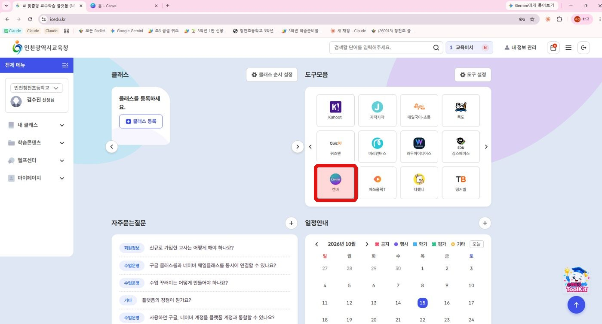
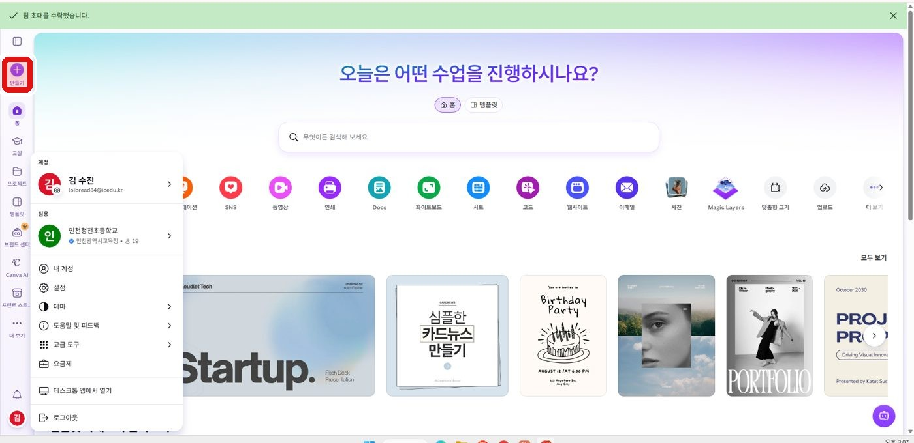
로그인이 안 되나요? 로그인 영역 아래의 아이디 찾기와 비밀번호 재설정을 먼저 눌러 보세요. 그래도 안 되면 쉬는 시간에 강의자가 도와드립니다. 기다리는 동안 일반 무료 캔바 계정으로 먼저 실습해도 됩니다.
오늘의 목표 교육 콘텐츠에서 우리 반 수업에 쓸 자료를 하나 찾아 열고, 제목과 내용을 우리 반에 맞게 고칩니다.
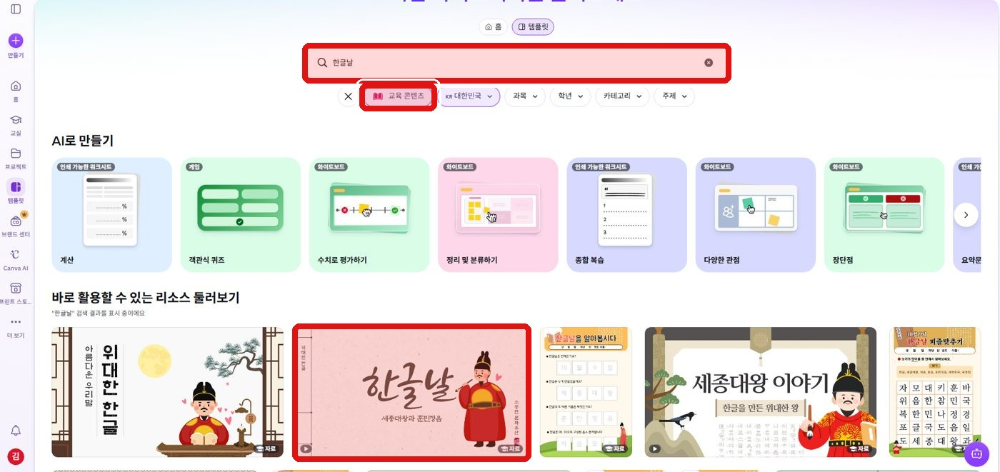
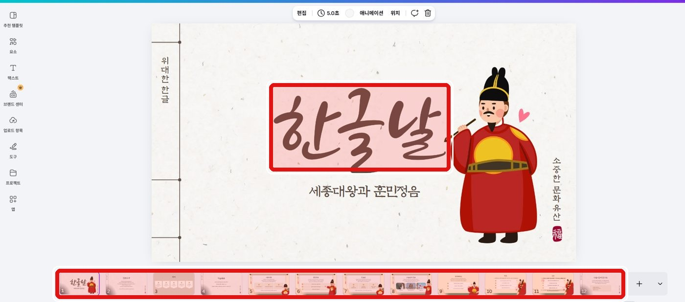
알아 두세요 AI로 만들기 기능은 계정에 따라 다를 수 있습니다. 열리지 않으면 건너뛰고 자료 찾기에 집중하세요.
완성 기준 교육 콘텐츠에서 자료 한 개를 열어 제목을 바꾸고, 글 한 곳을 우리 반에 맞게 고쳐 보기.
오늘의 목표 내일 수업에 쓸 슬라이드 한 장을 템플릿으로 완성합니다. 마음에 드는 템플릿을 골라 보세요. EDU 표시가 붙은 것도 있어요.
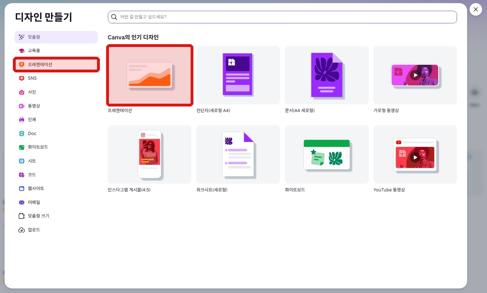
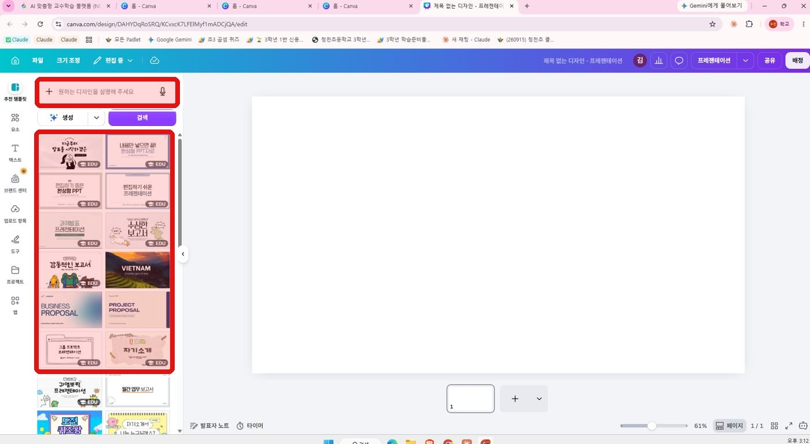
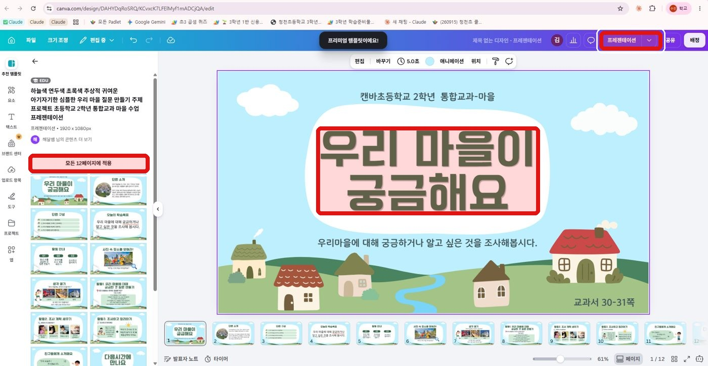
완성 기준 제목, 설명 글, 그림이 각각 한 개 이상 들어간 슬라이드 한 장.
오늘의 목표 우리 학교 행사(운동회, 학예회, 독서 행사 등) 홍보 포스터를 한 장 만들고 공유합니다.
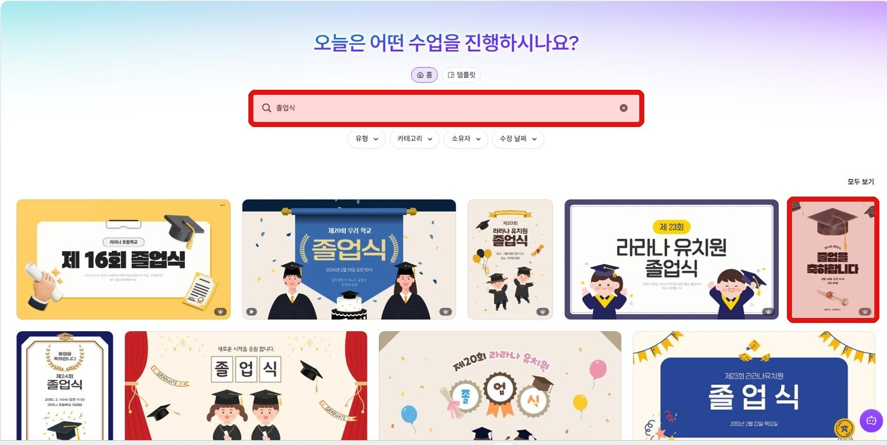
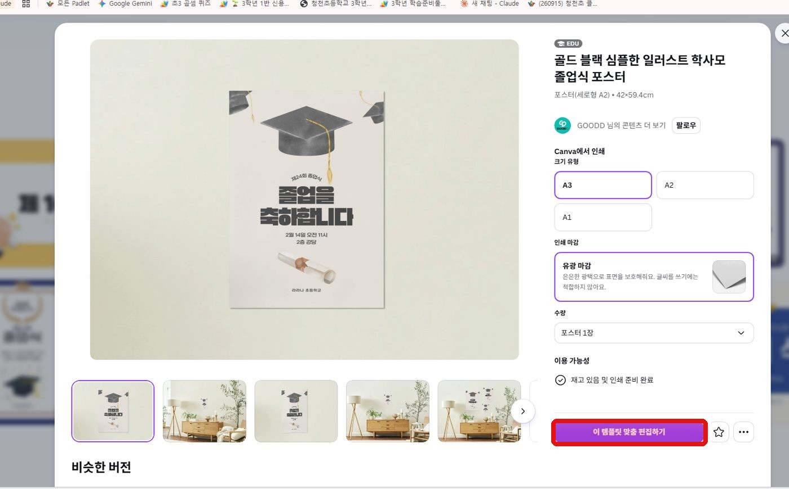
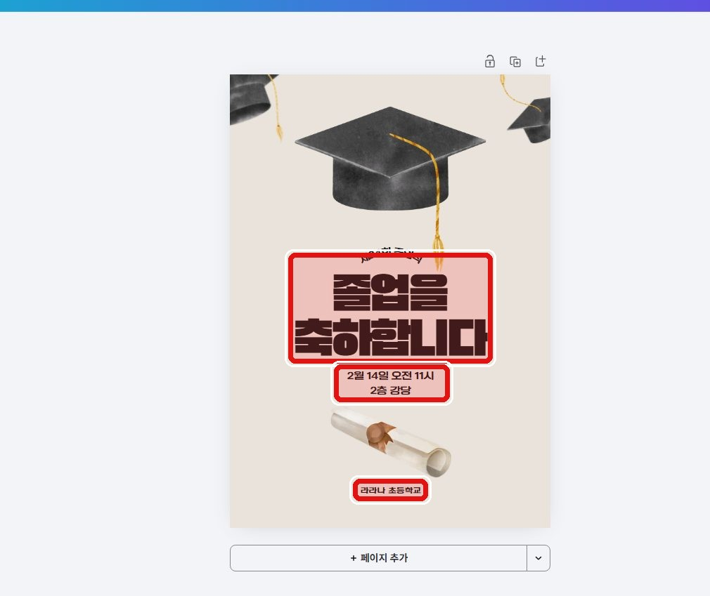
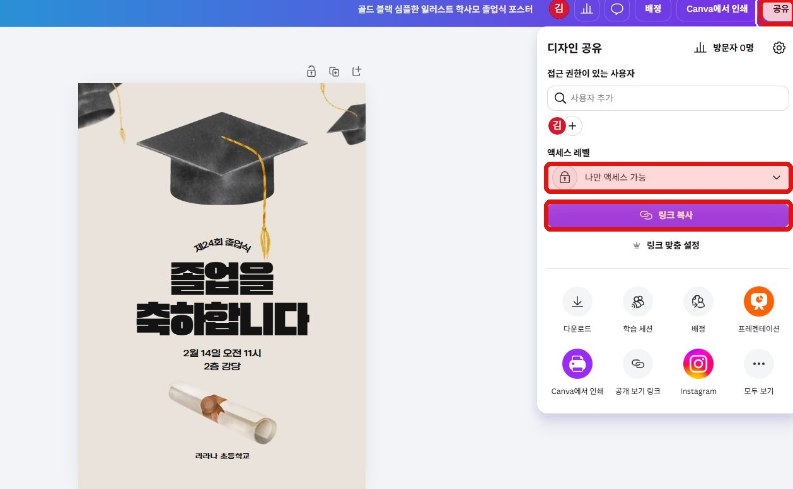
주의 설명 창의 인쇄 항목(크기, 인쇄 마감, 수량)은 인쇄를 주문하는 기능입니다. 실습에서는 누르지 마세요.
포스터 요령 글자는 3가지 이내(행사 이름, 날짜·장소, 한 줄 문구)로 줄이면 멀리서도 잘 보입니다. 학생 얼굴이 나온 사진은 보호자 동의 없이 쓰지 마세요.
완성 기준 행사 이름, 날짜, 장소가 들어간 포스터 한 장, 공유 링크 만들기까지 완료.
오늘의 목표 옆자리 선생님과 짝이 되어, 내가 만든 포스터를 같이 보고 고쳐 봅니다.
아래 두 방법 중 하나를 골라서 진행하세요. 시간이 되면 나머지 방법도 해 봅니다.
방법 A 짝 선생님을 직접 추가하기
이름이나 이메일을 아는 선생님에게 공유할 때
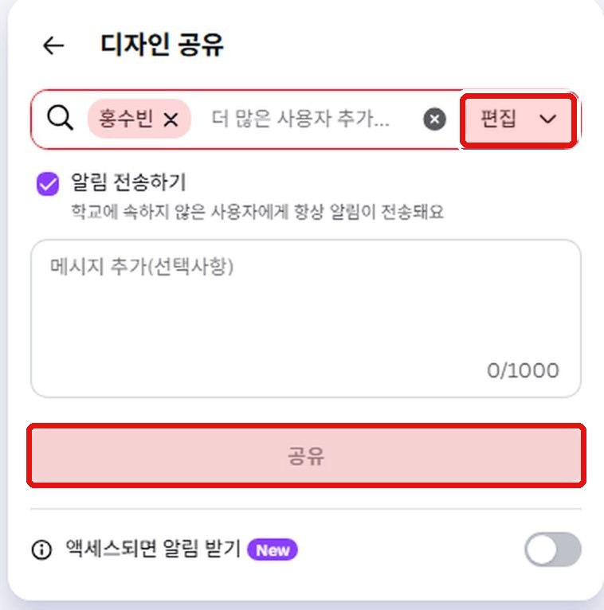
방법 B 링크로 공유하기
링크를 메신저로 보내면 될 때, 여러 선생님에게 한꺼번에 보낼 때
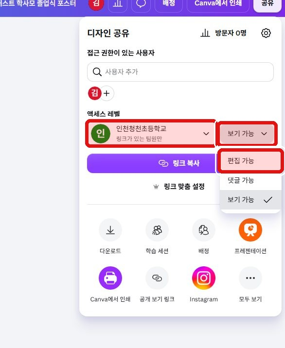
공유가 끝나면 두 방법 모두 같은 순서로 확인합니다.
주의 학생 정보가 들어간 자료는 꼭 필요한 선생님께만 공유하세요. 링크가 있는 모든 사용자로 열어 두면 링크를 아는 사람은 누구나 열 수 있습니다. 작업이 끝나면 권한을 보기 가능으로 돌리거나 공유 범위를 다시 줄이세요.
완성 기준 짝 선생님이 고친 내용이 내 포스터에 나타나는 것.
오늘의 목표 만든 포스터나 슬라이드를 내 컴퓨터에 파일로 저장해, 학교 업무에 바로 쓸 수 있게 합니다.
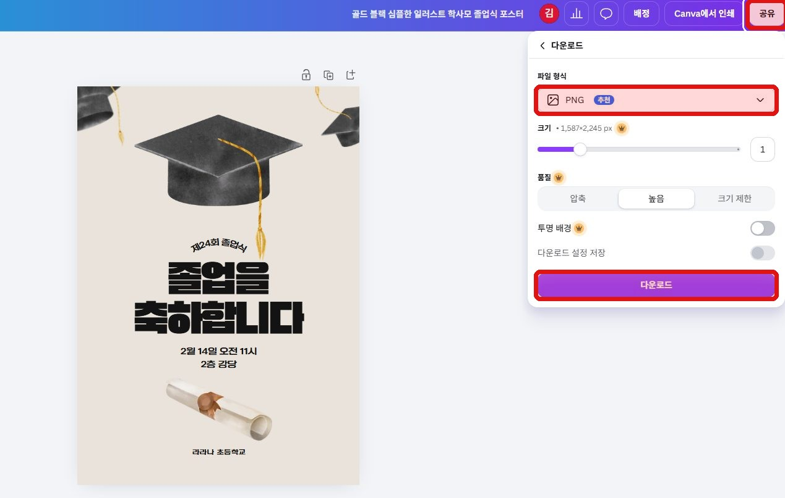
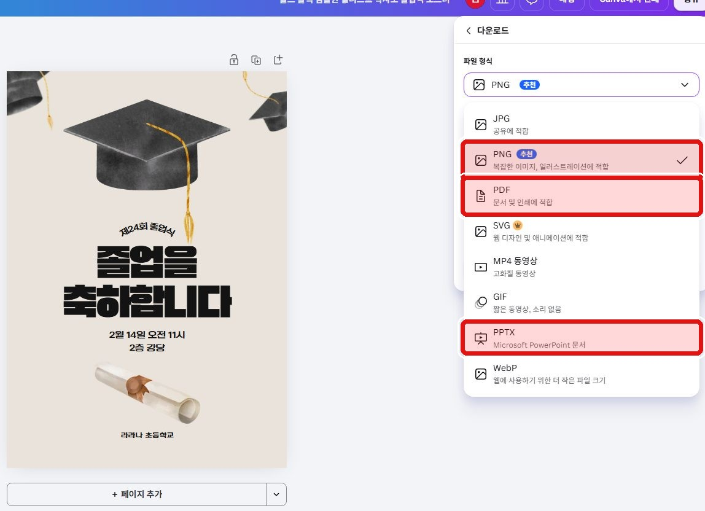
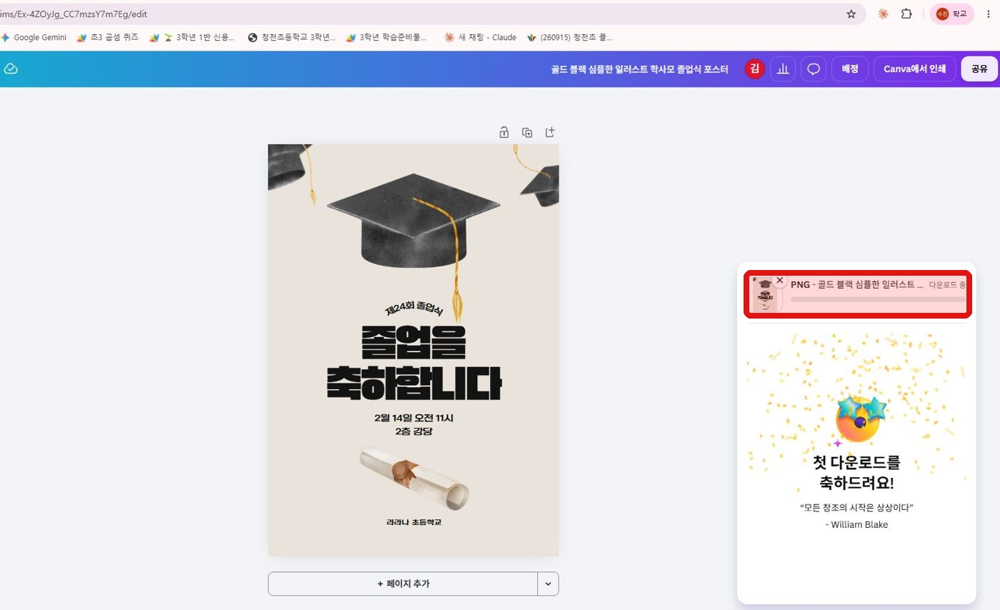
알아 두세요 크기, 품질, 투명 배경, SVG에는 왕관 표시가 있습니다. 실습에서는 왕관이 없는 기본 설정으로 저장하세요.
완성 기준 내 컴퓨터에 PNG 또는 PPT 파일 한 개가 저장되어 열리는 것.
아이디와 비밀번호를 다시 입력해 보고, 그래도 안 되면 손을 들어 알려 주세요. 소속 교육청이 다르면 계정이 없을 수 있습니다.
이 경우 일반 무료 캔바 계정으로 실습하면 됩니다.
EDU 표시가 붙은 템플릿은 교육용 계정에서 바로 쓸 수 있습니다.
검색 결과 카드에 왕관이 보여도, 눌러서 열면 EDU로 표시되는 템플릿이 있습니다. 먼저 눌러서 설명 창의 표시를 확인하세요. 열리지 않으면 다른 템플릿을 고르세요.
캔바는 자동 저장됩니다. 홈 화면의 프로젝트에서 최근 디자인을 찾아보세요.
학년이나 교과를 바꿔 다시 찾아보거나, 주제를 짧은 단어로 검색해 보세요.
공유 창의 액세스 레벨 오른쪽 드롭다운에서 편집 가능, 댓글 가능, 보기 가능 중에서 고를 수 있습니다.
함께 고치려면 편집 가능으로 바꾸세요. 처음에는 보기 가능으로 되어 있을 수 있습니다.
다른 학교 선생님과 링크로 공유하려면 왼쪽 드롭다운에서 링크가 있는 모든 사용자를 고르세요.
개인정보 안내 학생 얼굴 사진, 이름, 연락처가 들어간 자료는 공유 링크를 만들기 전에 한 번 더 확인하세요.